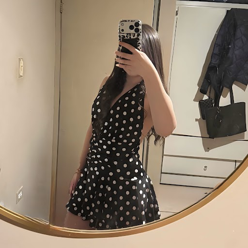

Francely Felix
Mi nombre completo es Francely Cebreros Felix tengo 18 años mi cumpeaños es el 28 de agosto, naci en los mochis sinaloa y vivo en Mexicali B.C desde los 8 años, me gusta el color amarillo y mi comida favorita es el espagueti, mi novio se llama Noe Francisco tiene 19 años y nos conocimos en la secundaria, tengo dos mascotas un perrito pug y una mini pig, tambien tengo 3 hermanos dos hombres y una mujer